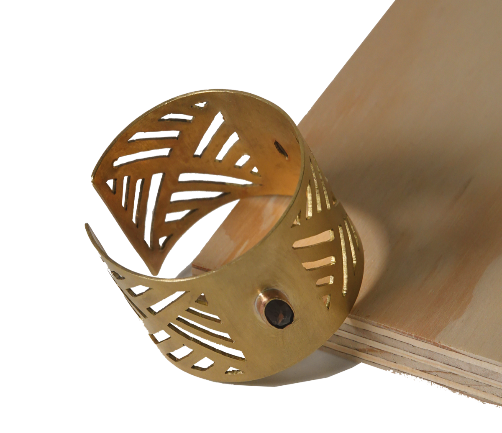
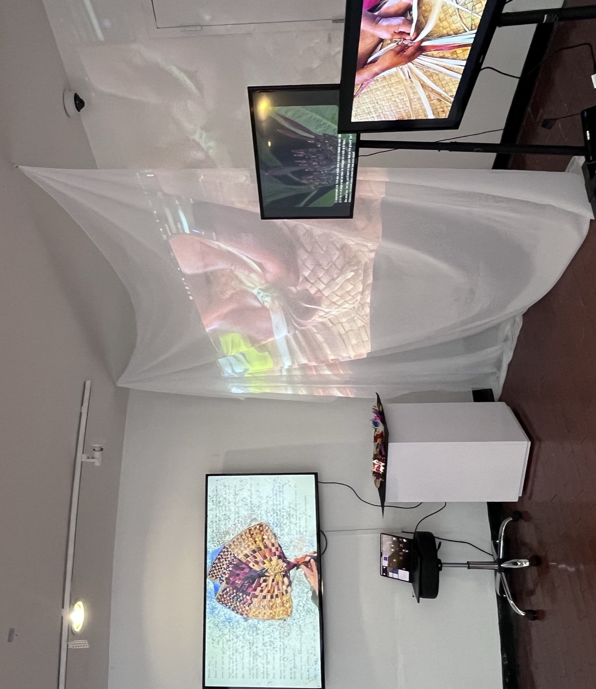

Design · Experiments · Observations
A way of seeing.
A way of making.
I explore stories, systems, and everyday life through design—giving ideas form as images, interactions, and objects.
Selected work
Across digital & physical forms

01
When Text Meets Map
Reading stories through the places they hold.Interactive storytelling

02
From window to wrist
A memory of Suzhou, translated into an object.Jewelry & material exploration

03
Memory Tides
Giving memory a changing, visible form.Interactive installation

04
Casita City
A place to cook, gather, and live together.Community & shared living
More work
Other questions, other forms
Away from the finished project
Small things,
looked at closely.
Photographs, drawings, and the everyday moments that make me pause.
Browse explorations ↗